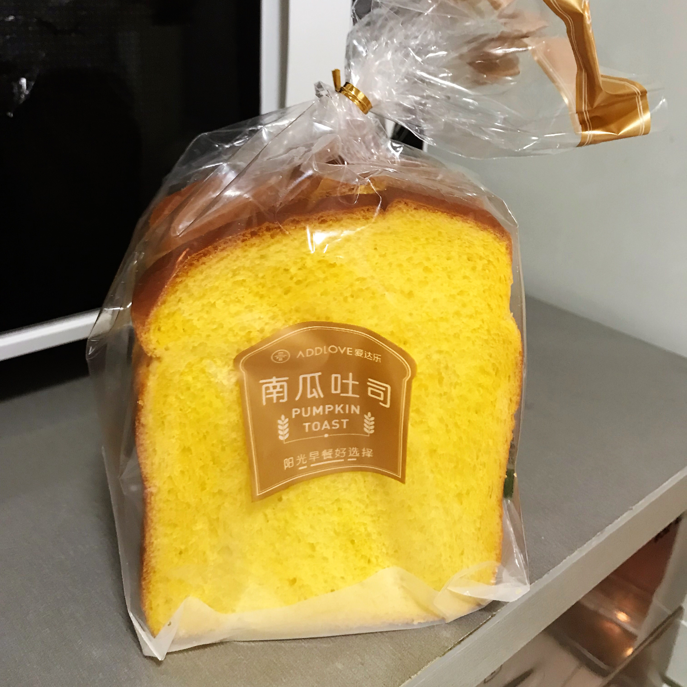
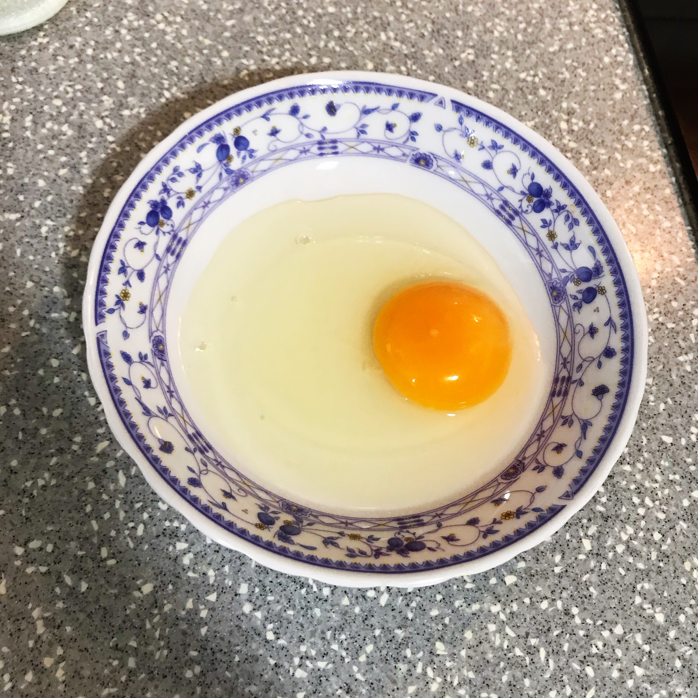
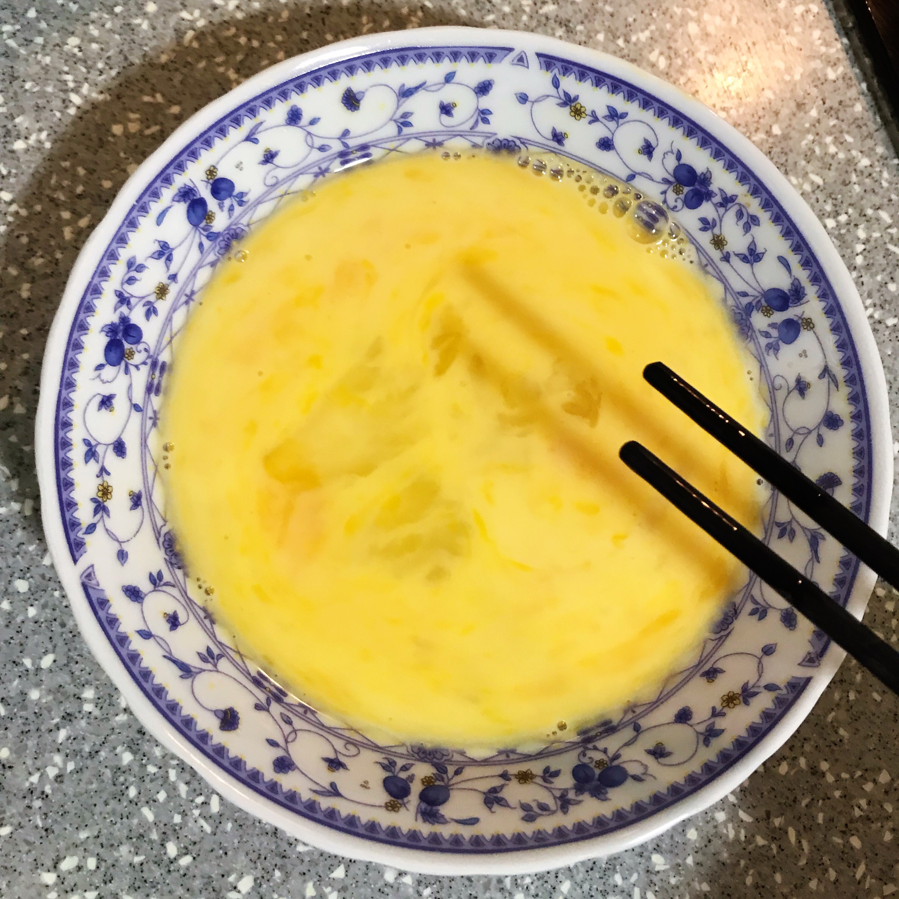
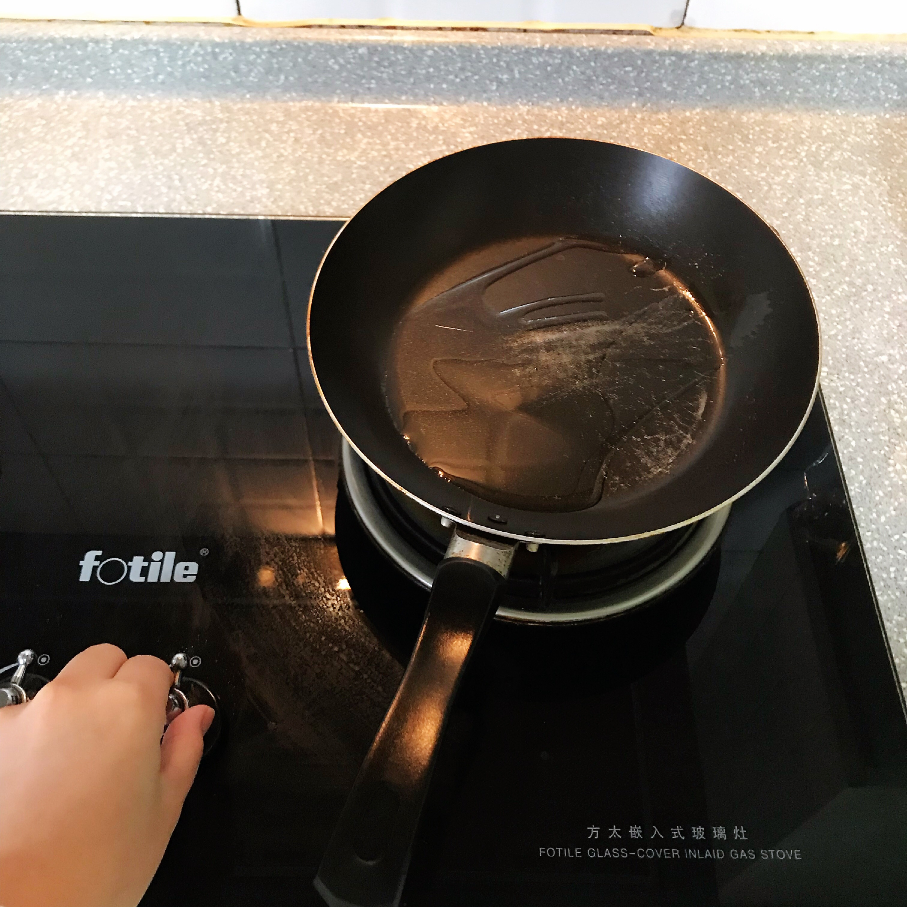
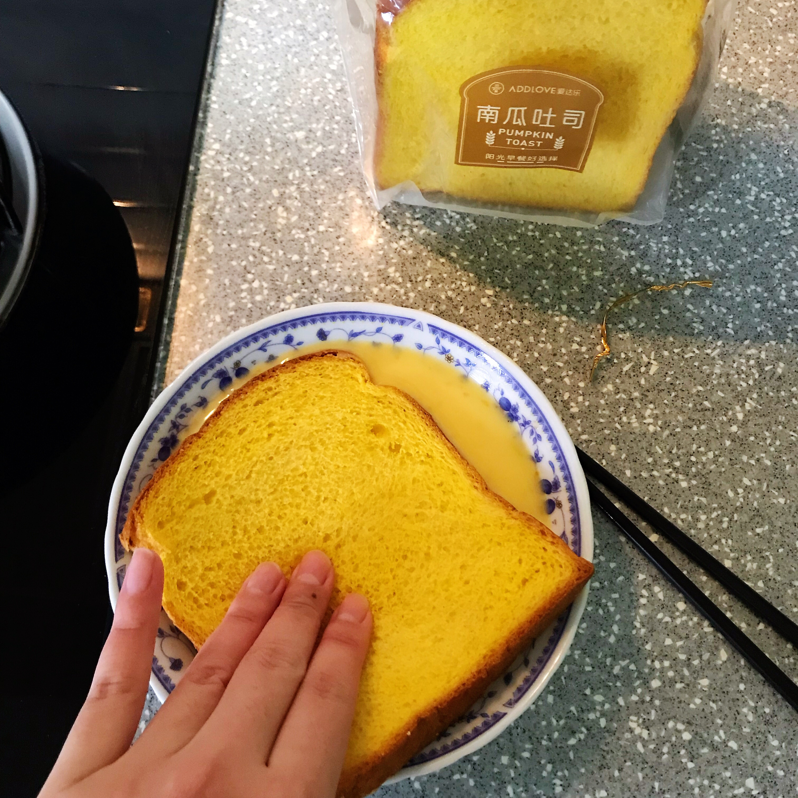
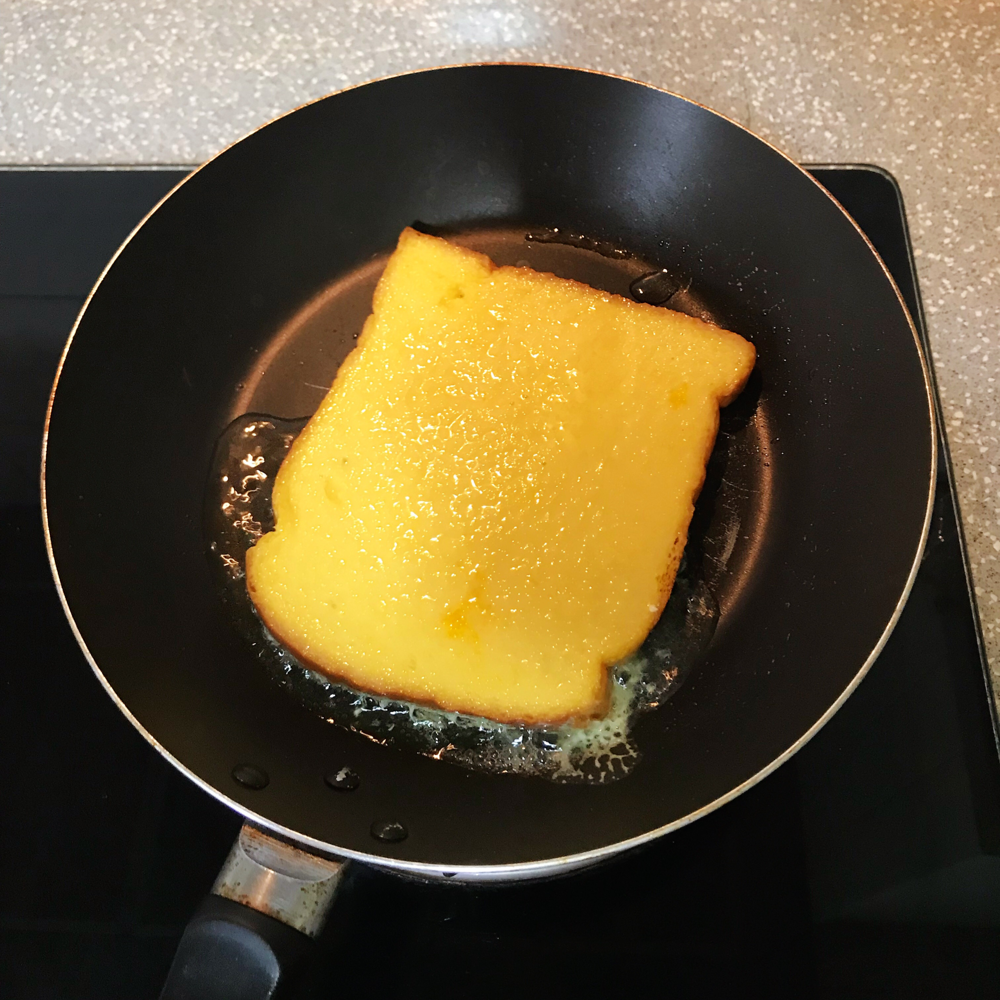
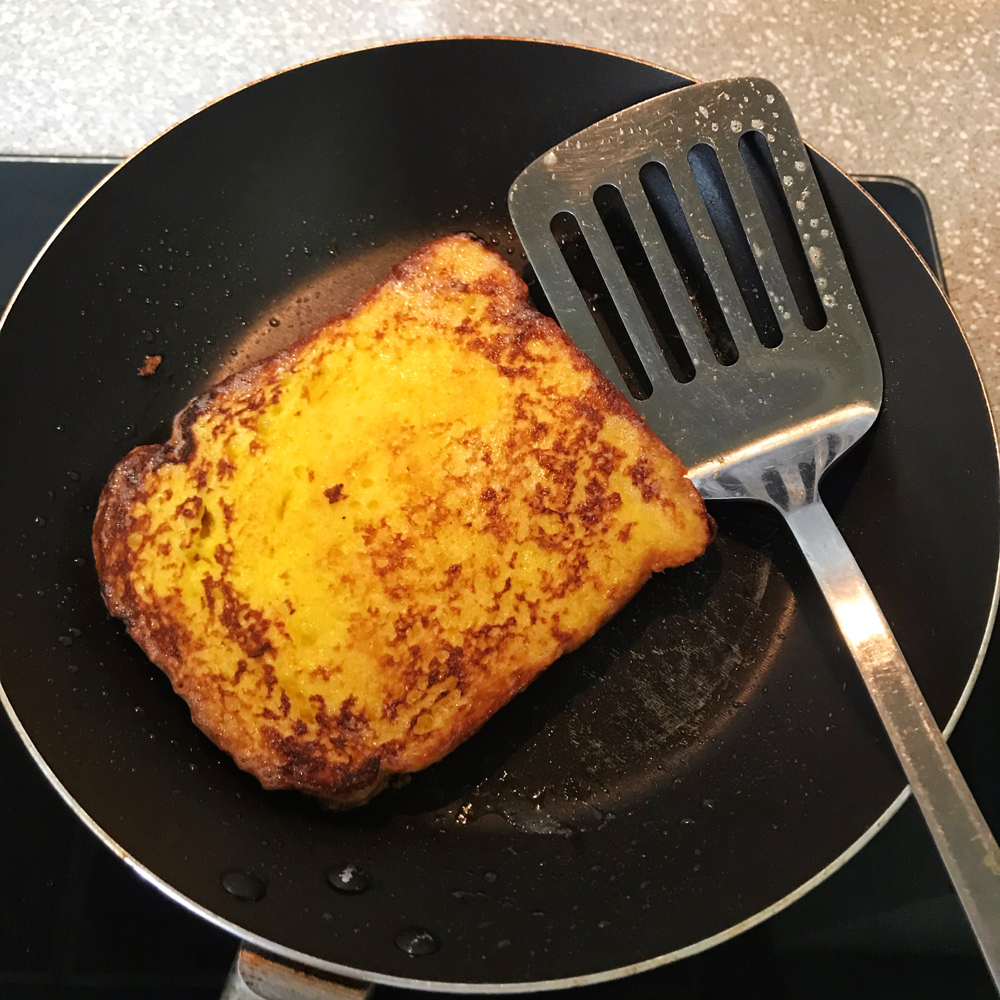
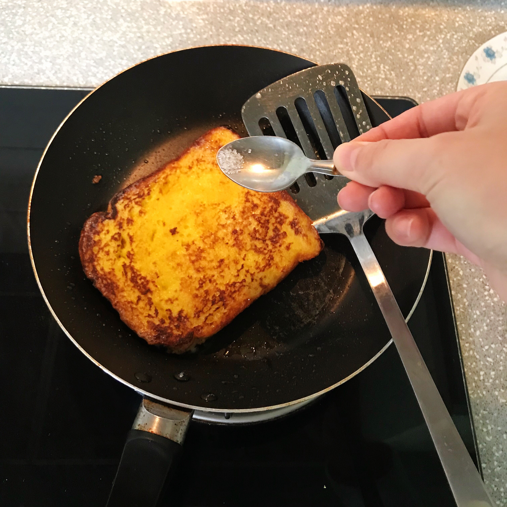

- Prepare some bread slices. I'm using pumpkin toast!
- Crack 1-2 eggs to a plate. Since I'm only cooking 1 toast, I only used 1 egg.
- Add 3/4 cup of milk in it and mix it up with the egg.
- Spread vegetable oil (or butter) on a wok and heat it up with mid-high heat.
- Dip the toast into egg + milk mix and soak it up on both sides.
- Toss the toast into the wok and turn the heat down to low-medium.
- Flip to the other side.
- Serve by adding a little bit of sugar on the top (Totally optional)